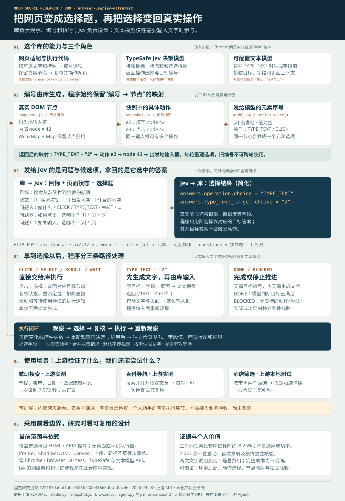

观察网页
读取可见文字和控件的名称、角色、当前值，把实际 DOM 节点映射成编号表。
结构化页面状态BROWSER AGENT / RESEARCH NOTE 009
库把可见网页控件整理成编号选项，连同目标和页面状态交给 Jev。Jev 选择操作与目标编号，库把选择还原为真实网页操作；需要写字时，才调用文本模型。
这里是独立研究与教学模拟。按钮不会运行上游 Agent。
单程 / 往返
CLICK出发地 · 空
TYPE目的地 · 空
TYPE出发日期 · 空
TYPETHE COMPLETE PICTURE / 一张图串起来
这张图汇总职责分工、编号映射、模型输入与输出、执行分支、使用场景和证据边界。沿箭头看，就能理解整条链路。
库负责读页面、编号和执行；Jev 负责选择；文本模型按需写字段值。Jev 本身就是模型。它返回的选择通常直接交给执行器，文字输入才多一个生成步骤。

01 / WHAT IT DOES
Jev Ultrafast 是一个 Python 浏览器智能体。目标适合拆成网页上可见、可执行、可检验的小步骤时，它能在普通 HTML / ARIA 控件间推进任务。
读取可见文字和控件的名称、角色、当前值，把实际 DOM 节点映射成编号表。
结构化页面状态从点击、输入、下拉选择、滚动、等待中选操作，并选一个与操作匹配的目标。
动态动作空间操作前重查页面和目标是否仍有效；任务结束仍需由独立条件核对真实结果。
防止过期操作CLICKTYPE_TEXTSELECTSCROLLWAITDONE / BLOCKED可以在网站和网页后台中搜索、填写普通表单、选择筛选项、点击链接。底层通过 Browser Harness 连接 Chrome，再用浏览器调试协议 CDP 操作所创建的标签页。
默认不靠截图理解视觉，也未提供 Windows 桌面、手机 App、终端或文件管理的执行器。若把思路迁移到这些环境，需要另写观察器、动作集合与执行器。
| 角色 | 接收什么 | 输出什么 |
|---|---|---|
| 库的页面适配层 | 真实网页 DOM、可见文字和状态 | 编号元素、可执行动作、内部节点映射 |
| TypeSafe Jev 决策模型 | 用户目标、页面状态、历史和候选选择题 | 操作选择、对应目标编号，以及概率和置信度 |
| 可配置文本模型 | 目标、选中字段、页面文字和近期操作 | 要输入的文字；仅在 TYPE_TEXT 时调用 |
| 库的浏览器执行器 | 映射后的动作、真实节点、必要时的文字 | 点击、输入、选择等页面变化 |
| 独立结果检查器 | 操作后的实际页面或业务状态 | 成功或失败；具体任务需自行定义检查条件 |
02 / UNDER THE HOOD
页面处理和编号由这个库实现。它保留真实节点的引用，再把观察结果变成 Jev 可以回答的选择题；编号不是永久的网页地址。
snapshot.js 扫描常见标签与 ARIA 角色，提取名称、值和状态，筛出当前视口中的可操作控件。密码、文件、隐藏输入会被排除。
内部节点 ID 对应真实 DOM 对象；一次快照中，动作再获分配 e1、e2…。一个输入框可以同时有“填写”和“点击”两个动作。
action_space() 按同一节点去重，生成 [1]、[2]… 元素序号。不同操作只列出兼容的目标；下拉选项可用 2:1 表示。
若 Jev 选 TYPE_TEXT → [2]，程序找到该操作下编号 2 的动作，再找到真实节点。每轮重建选项，不能跨轮复用旧编号。
ONE INPUT / 三种标识的关系（示意）
回程：TYPE_TEXT + "2" → e2 → node 42 → 实际输入框。内部 node ID 和动作 ID 由程序维护，Jev 选择的是发给它的元素序号。
把可见控件和文字做成快照，保留真实节点引用。
同时询问“做什么”和各类操作“点哪里”，只采用匹配的目标。
复核状态、重新定位控件并排除遮挡，再通过 CDP 输入。
只有选中 TYPE_TEXT 后，文本模型才根据任务和字段含义生成一个值；输出必须符合受限 JSON 结构。
模型选择的是已观察到的编号。它的输出不会被当成任意坐标、CSS 选择器、Shell 命令或 JavaScript 直接执行。
INSIDE ONE REQUEST / 看一次交互
发送的是“任务 + 当前状态 + 候选选项 + 选择题”。这里的“答案”是候选答案，不是预先知道的正确答案。Jev 返回自己选中的操作和目标。
固定教学数据，用于展示调用关系；没有发送在线请求，也没有生成真实模型答案。一次 Jev 请求可同时询问操作与多个目标问题，只有所选操作的目标答案会进入执行路径。
库使用带 Bearer 密钥的 HTTP POST 请求 https://api.typesafe.ai/v1/systemone。请求主要字段如下；目标和规则放在每个问题的 instructions 中。
model: "jev-latest"（可配置） state: page: url / title / text elements: index / label / role / value / operations ... recent_actions: 最近最多 10 次操作 questions: operation: type="choice" / criteria / instructions click_target: type="choice" / criteria / instructions type_text_target: type="choice" / criteria / instructions select_target: 仅有可用下拉选项时加入
响应从 answers.operation.choice 读取操作；再读取例如 answers.type_text_target.choice。库检查选择是否属于候选项、概率是否合法等，然后用“操作 + 目标序号”查回动作。未选中的目标答案不会执行。
文本模型收到原目标、选中字段的含义与值、页面上下文和近期动作，不是只收到一个数字。其输出必须为只有 text 字段的 JSON，且内容通过字符串校验才可输入。
一次读取页面快照，减少浏览器通信；操作和目标共享一次 Jev 请求；默认不传截图；只在输入时生成文字；对页面变化采用有范围的复核和短等待。
本库公开了页面适配、请求构造和执行循环。Jev 的神经网络结构、训练数据和训练流程并未在这个库中实现，不能把客户端选择题接口等同于模型内部算法。
03 / MEASURED, WITH LIMITS
这些是上游公开测量，不是本仓库复测。对照对象是该项目自己的旧版运行时。
从首次预测到接受完成选择，包含模型调用、文本生成、浏览器动作和页面加载等待。
新版中位耗时 7.092 秒；旧版 9.450 秒。两组各通过 3/3。
一次读取页面快照，减少反复取可访问性树和逐个解析 DOM 节点。
另两项检查：Wikipedia 指定文章 2.798 秒；本地酒店搜索与筛选 1.896 秒，均为单次烟雾检查。
成本尚无完整结论：公布的约 $0.00006272 只包含两次文本模型调用，不含 TypeSafe 与浏览器成本。
04 / SCENARIO WALKTHROUGH
选择任务，逐步查看“页面观察 → 操作决策 → 下一状态 → 验收条件”。这是依据上游披露任务编写的教学模拟。
示意控件与步骤由本研究重组，不是上游逐帧轨迹、实时浏览器画面或性能测试；真实完成状态必须由独立检查器判断。
05 / WHERE IT FITS
先判断页面控件能否被它观察到，再判断结果能否被独立核验。复杂页面和敏感操作需要额外工程。
结合后端开发经验与 AI 实践，可学习把自然语言目标连接到网页操作，复用页面快照、动作编号、模型路由和结果核验。先选一个真实重复任务，验证节省的时间、成功率和总费用，再判断是否值得做成工具或服务；目前没有收入验证。
| 场景 | 可交付的结果 | 证据或接入条件 |
|---|---|---|
| 航班查询 | 设定城市、日期和单程，看到匹配航班 | 上游实测 一个任务的小样本；未订票 |
| 资料导航 | 从网站入口找到并打开指定文章 | 上游实测 Wikipedia 单次检查；精确 URL 验收 |
| 多条件筛选 | 应用城市及筛选，再打开指定结果 | 上游本地测试 酒店测试页；不代表真实订房网站 |
| 内部网页后台 | 查找记录、填写普通表单、设置筛选 | 扩展设想 需测试控件覆盖、权限、登录态与业务验收 |
| 网页流程冒烟检查 | 按自然语言目标走通短流程并保存状态 | 扩展设想 需接入稳定断言、测试数据与失败记录 |
| 个人助手的网页执行环节 | 接收明确子任务，在网页中执行并返回状态 | 扩展设想 需补上层编排、结果结构化、错误恢复；桌面与文件执行另做 |
若目标系统有稳定 API，可优先比较直接调用的成本与可靠性；网页智能体适合需要通过界面完成、路径可能变化的任务。对固定高频流程，也应与确定性脚本比较。以上是本研究的选型建议，尚无这些场景的实测数据。
FROM UNDERSTANDING TO USE
运行这个库，需要网页环境、模型服务和业务验收共同配合。开源的客户端代码可以研究和改造，模型服务仍是外部依赖。
现有 Chrome 配置会被所创建的标签页共享。服务端密钥不应放进静态网页；本研究页没有密钥输入或真实调用。
接入后先用自己的真实任务记录成功率、完整耗时、总账单与失败原因，再决定是否承担生产流程。
编号由库的网页处理代码产生，Jev 收到的是已经整理好的候选项。
还要发目标、页面文字、控件名称和当前值、近期操作等上下文。编号承载引用关系，本身没有业务含义。
Jev 的选择由程序路由。点击等操作可直接执行；只有 TYPE_TEXT 才调用文本模型写内容，之后仍由程序输入。
只提供实现所支持的可见控件。快照中控件动作最多保留 250 条，可见正文截取最多 6,000 字符；复杂结构仍有覆盖限制。